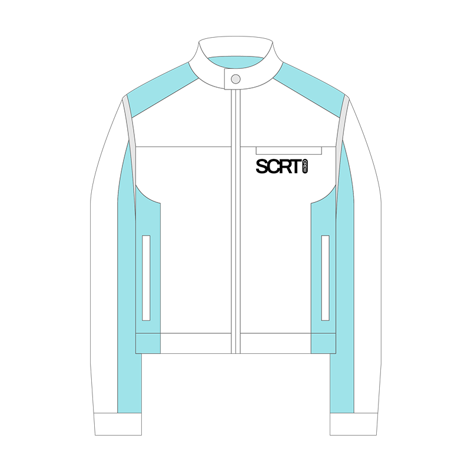
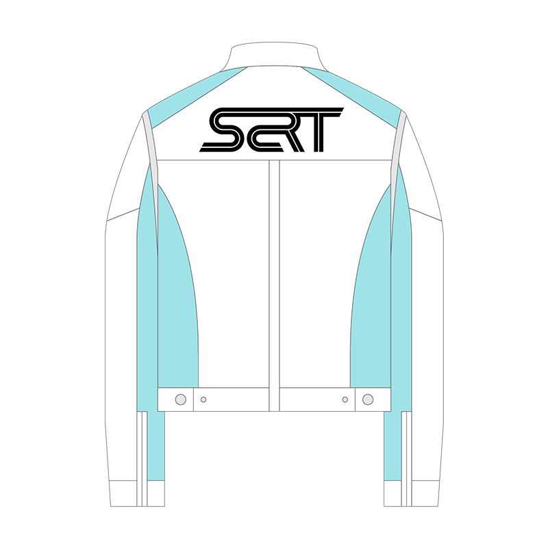
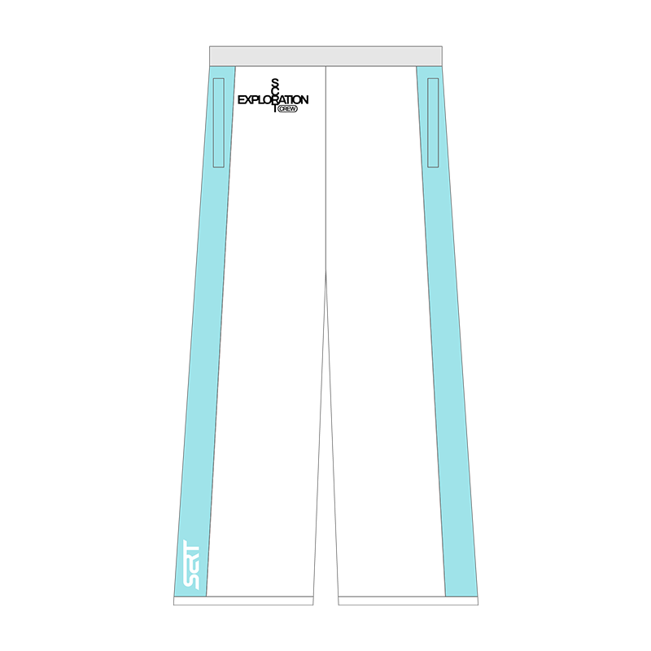
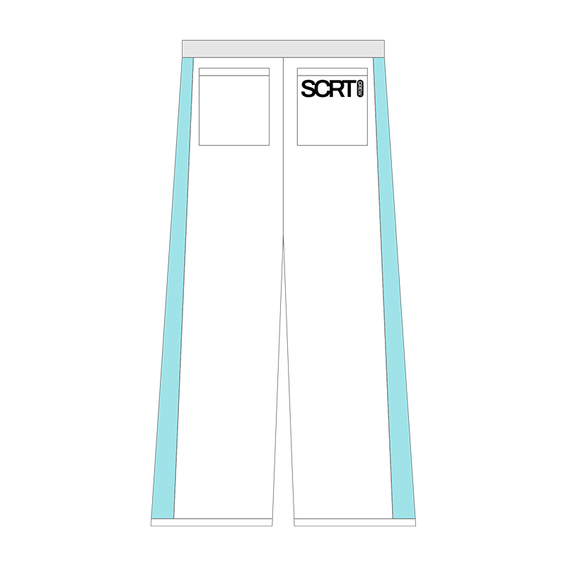
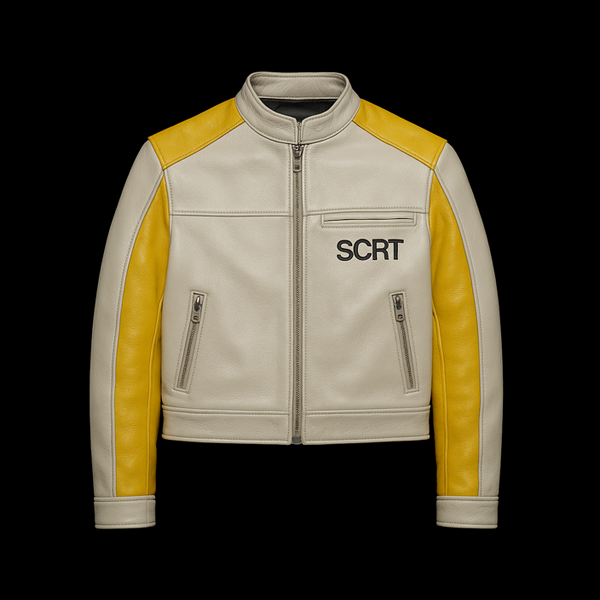
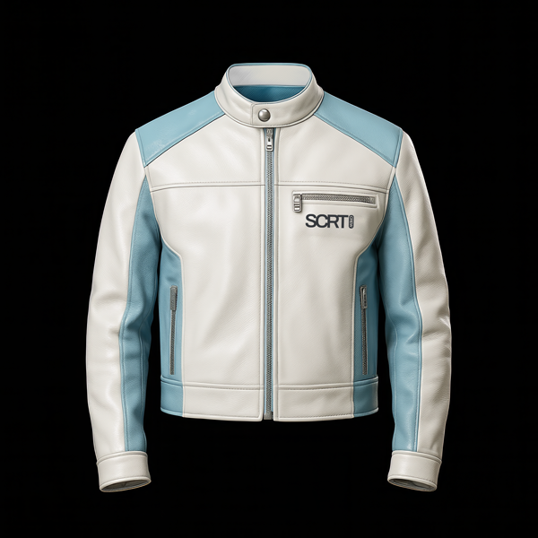

This project is an entry to the SCRT® x Dazed Club Art Competition 2025. The theme of the competition is Sci-Fi and I took the opportunity to take inspiration from the process SCRT use to create clothing drops based on subcultures.
I really appreaciate the way SCRT expand the universe of existing narratives, continuing the world building of the original authors and creating great clothing whilst doing so.




My first concept was to create a world inspired by 1980s sci-fi media and retrofuturism. I found there was potential to overlap the clothing of the characters in the universe with clothing produced for the drop.
I decided to focus on motorjacket and pants as they fit the aesthetic of the inspiration and are visually similar to spacesuits, allowing for the clothes to appear as part of the world when paired with props like a space helmet and raygun.


To continue bringing my ideas to life I used AI image generators to prototype what a real life version of the motorjacket and pants would look like.
After manual modification I created a front and back image of the realistic outfit. This would then allow me to better guide the AI into following my vision.


The initial realistic mockup followed the concept closely however it misunderstood some important details.
Using AI captioning and manual modification I was able to combine visual and textual instructions to better instruct the AI on realising my vision. I then used Photoshop to manually add the graphics I had designed back to the image as the image generation failed to transfer these without distortion or re-imagination.


To realise the 'SCRT' crew as I had envisaged them I theorised how different colours could be used to represent each character. I further researched 1980s retrofuturism to find inspiration for the colour palette and styling effects of the characters.